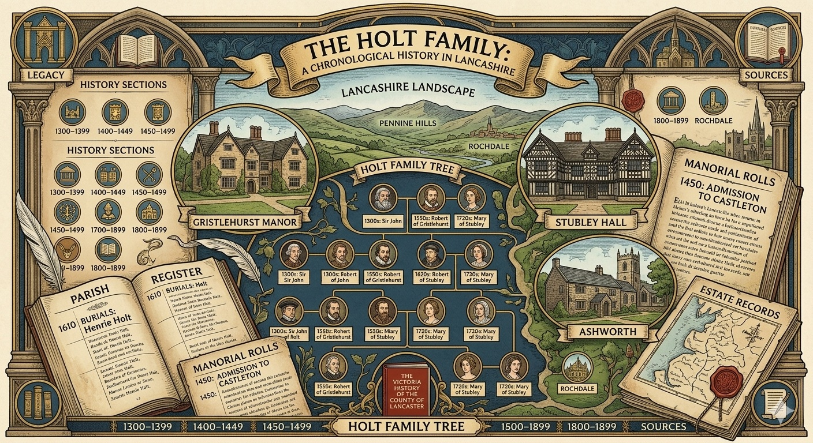

History of Lancashire
This section presents a chronological summary of references to the Holt family found in the Victoria History of the County of Lancaster(1906). Compiled from manorial surveys, parish registers, legal proceedings, and estate records, the eight‑volume series remains one of the most authoritative sources for the county’s medieval and early‑modern history. Unless otherwise noted, citations refer to Volume 4.
The Victoria County History draws on a wide range of primary documents preserved in local and national archives. Its entries record the families who held land, exercised local authority, or appeared in the administrative life of Lancashire. The Holts are among the most frequently mentioned, reflecting their long‑standing presence in the region
Further detail on the Victoria County History, along with digitised editions of many related works, is available through British History Online which is a major digital library of printed sources for the history of the British Isles.

Across the centuries, members of the Holt family appear in manorial rolls, ecclesiastical documents, heraldic visitations, and local histories. Their estates Gristlehurst, Stubley, Ashworth, Castleton, Bridge Hall, and other townships formed of the social and economic structure of Lancashire. These entries trace the documentary footprint of the family and provide a framework for understanding their role within county’s evolving landscape.